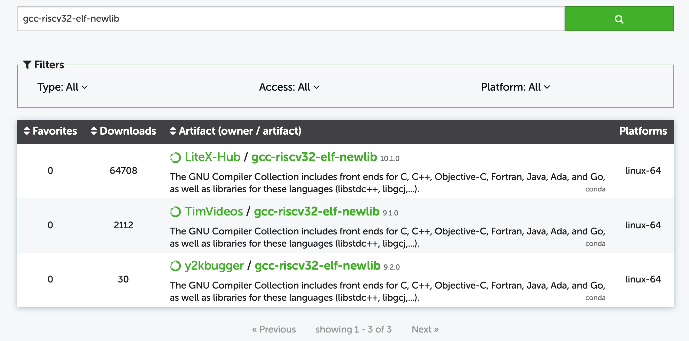
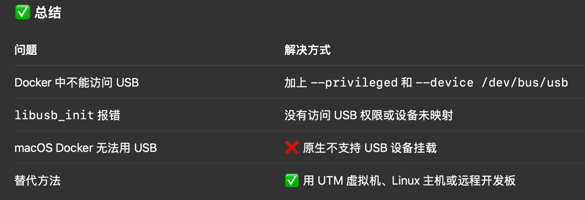
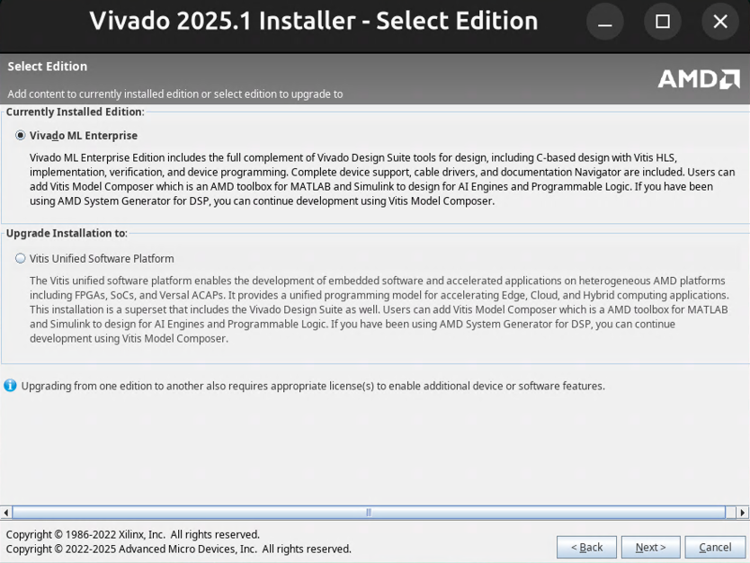
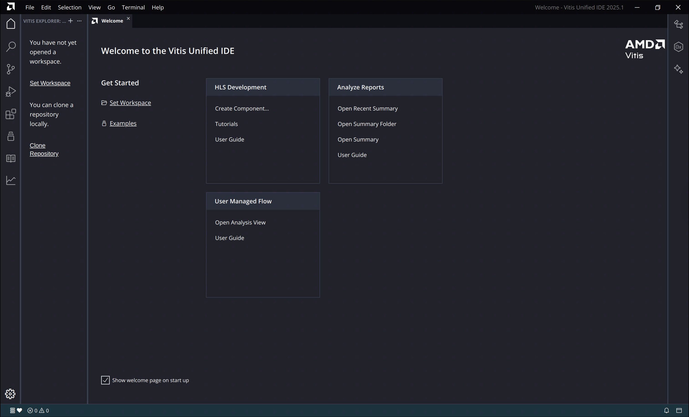
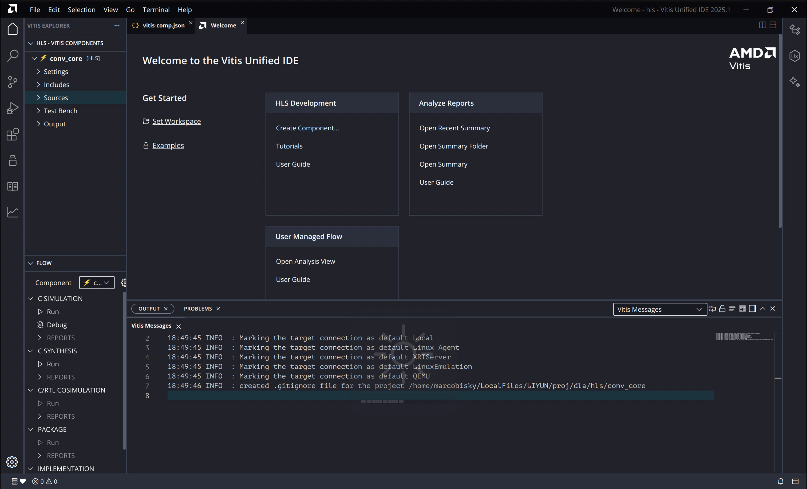

FPGA 开发环境配置
Arty A7-100T CFU-playground 环境配置
资料:
MacOS Docker 部署
以下是本人在 MacOS 试过的两种失败的方法, 供参考:
官方 Setup Guide 不适用于 MacOS, 本教程可以配合官方教程. 以下是在 14-inch MacBook Pro (M2 pro) 上我执行过的命令, 可能有不必要的步骤. 另外我之前安装过一些工具如 make, brew, openocd 等, 如有漏掉的步骤请用 brew 自行安装.
CFU 环境配置
git clone https://github.com/google/CFU-Playground.git cd CFU-Playground # Check necessary tools which gcc which make which brew brew install openocd ccache verilator ninja libusb libftdi which expect将
scripts/setup中的 line 58-60 替换为:# Check for libusb development libraries if [[ "$OSTYPE" == "darwin"* ]]; then # macOS: check for Homebrew libusb if ! brew list libusb >/dev/null 2>&1 || ! brew list libftdi >/dev/null 2>&1; then missing+=(libusb libftdi) fi else # Linux: check for apt packages if ! (apt list -i | grep libusb-1.0-0-dev) ; then missing+=(libusb-1.0-0-dev libftdi1-dev) fi fi再运行:
# Should end up "Setup complete" ./scripts/setupAmaranth能让你用Python写硬件描述语言, 我们暂时不安装.FPGA 开源工具链 SymbiFlow 配置
SymbiFlow是一个开源的 FPGA 工具链, 支持我们用的Arty A7-35T开发板.F4PGA(Framework for FPGA) 是它的下一代.MacOS 上会遇到以下问题:
- dfu-util 包不可用
- flterm 包不可用
- Python 3.7 不支持
执行:
brew install dfu-util yosys将
conf/environment-symbiflow.yml中替换为:name: cfu-symbiflow channels: - defaults - conda-forge dependencies: # Basic Python packages that should be available - lxml - simplejson - intervaltree - json-c - libevent - python=3.9 - pip - pip: - -r ./requirements-symbiflow.txt然后运行:
rm -rf env/symbiflow && make install-sf出现以下输出时表示安装成功:
Done installing SymbiFlow. To enter the environment, type 'make enter-sf', which creates a new subshell, and 'exit' when done.测试环境:
make enter-sf exit以上方法会在执行
zsh make prog TARGET=digilent_arty USE_SYMBIFLOW=1时出现错误, 因为我们删掉了很多
python依赖. 这些依赖在litex-hub源里面没有osx-arm64的版本!!!
CFU playground 里的 environment-symbiflow 里的很多依赖 (比如 dfu-util 和 flterm 等, 可以在 Anaconda 里面搜索你需要的包) 只支持 linux-64 版本, M 芯片的 MacOS 上的 PD 好像只能安装 linux-aarch64 架构的虚拟机.

gcc-riscv32-elf-newlib 只支持 linux-64在你安装的虚拟机终端执行:
arch不能是 aarch64 才行, 需要是 x86_64 才能安装 linux-64 架构的包!!!
我们利用 Docker 来搭建 CFU Playground 环境, 这样可以避免 MacOS 上的架构问题. 自行安装 Docker, 然后需要稍微改一下 scripts/Dockerfile 和 scripts/setup 脚本. 可以直接 clone 我的 fork:
git clone https://github.com/Marcobisky/CFU-Playground.git然后切换到 macos-env 分支, 在 CFU-Playground 目录下执行:
# Takes around 20 min
docker build -t cfu-playground --platform linux/amd64 ./scripts查看镜像:
docker images逐条执行, 其中 -v $(pwd):/workspace 表示当前目录 (宿主机)挂载到容器的 /workspace 目录中 (数据共享通道). 但是以下命令不要在 /workspace 里面执行:
docker run -it -v $(pwd):/workspace cfu-playground bash
./scripts/setup
# Takes around 9 min
make install-sf
make enter-sf
cd proj/proj_template
make clean
make bitstream TARGET=digilent_arty USE_SYMBIFLOW=1如果没报错, 恭喜你成功生成了比特流文件! 当你没插上板子的时候如果按照官方运行 make prog TARGET=digilent_arty USE_SYMBIFLOW=1 会报错:
Error: libusb_init() failed with LIBUSB_ERROR_OTHER
Traceback (most recent call last):
File "./common_soc.py", line 57, in <module>
main()
File "./common_soc.py", line 53, in main
workflow.run()
File "/CFU-Playground/soc/board_specific_workflows/general.py", line 127, in run
self.load(soc, soc_builder)
File "/CFU-Playground/soc/board_specific_workflows/general.py", line 116, in load
prog.load_bitstream(bitstream_filename)
File "/CFU-Playground/third_party/python/litex/litex/build/openocd.py", line 27, in load_bitstream
self.call(["openocd", "-f", config, "-c", script])
File "/CFU-Playground/third_party/python/litex/litex/build/generic_programmer.py", line 101, in call
raise OSError(msg)
OSError: Error occured during OpenOCD's call, please check:
- OpenOCD installation.
- Access permissions.
- Hardware and cable.
- Bitstream presence.即 libusb_init() 函数初始化错误. 事实上不可能通过 Docker 给开发版烧录, MacOS 环境有一个隔离层, GPT 如是说:

可以用两次 exit 退出容器 (第一次只会退出 enter-sf 的子 shell).
如果要交互式运行已经存在的容器 (例如叫 romantic_austin), 运行:
docker start -ai romantic_austinUbuntu 24.04 实体机部署
我们用 Arty A7-100T 开发板.
具体运行步骤几乎与 MacOS 一样, 直接按照 Setup Guide 执行即可. 如果 make install-sf 报错:
wget -qO- https://storage.googleapis.com/symbiflow-arch-defs/artifacts/prod/foss-fpga-tools/symbiflow-arch-defs/continuous/install/20220729-181657/symbiflow-arch-defs-install-xc7-7833050.tar.xz | tar -xJC env/symbiflow/xc7/install
xz: (stdin): File format not recognized
tar: Child returned status 1
tar: Error is not recoverable: exiting now
make: *** [Makefile:58: install-sf] Error 2仅仅是网络连接的问题, 请把科学上网 (如 Clash Verge) 安装上 Service Mode, 然后打开 Tun Mode. 把 Makefile 中 63-65 行的三个 wget 改成 curl 的写法. 在我的 fork 上已经更改, 直接 clone 即可:
git clone https://github.com/Marcobisky/CFU-Playground.git让后切换到 ubuntu-env 分支, 即可跑通 make install-sf.
如果没插入开发板, 运行:
make bitstream TARGET=digilent_arty USE_SYMBIFLOW=1即可跑通. 若已经插入开发板, 则运行:
make prog TARGET=digilent_arty USE_SYMBIFLOW=1 EXTRA_LITEX_ARGS='--variant=a7-100'
make load BUILD_JOBS=4 TARGET=digilent_arty EXTRA_LITEX_ARGS='--variant=a7-100'如果你跟我一样用的是 Arty A7-100T 而不是 35T, 必须加上 EXTRA_LITEX_ARGS='--variant=a7-100' 参数 (见 CFU Wiki), 否则程序会卡在 make load 这一步, 并且会一直卡在这里 (按 enter 也没有用, 只能两下 Ctrl+C 退出):
/home/merlin/fpga/CFU-Playground/soc/bin/litex_term --speed 3686400 --kernel /home/merlin/fpga/CFU-Playground/proj/proj_template/build/software.bin /dev/ttyUSB1当然卡在这里还有可能是其它问题: 见 Issue #787, Issue #775.
iCESugar-UP5K 开发环境配置
资料:
- 官方 icesugar: 重要! 用它来学习 iCESugar-UP5K 开发板.
- My TinyML Repo
MacOS 部署
如果你没有安装 Homebrew 包管理器, 请先安装 (会自动先安装 Xcode 命令行工具, 输入密码的过程不可见, 装完了要按照提示将 brew 添加到 PATH 中):
/bin/bash -c "$(curl -fsSL https://raw.githubusercontent.com/Homebrew/install/HEAD/install.sh)"直接按 nextpnr 中的 next-pnr-ice40 的说明安装即可. 大致为以下几个命令 (可能有遗漏), 逐条执行:
git clone https://github.com/YosysHQ/nextpnr.git
cd nextpnr
# May not be successful immediately
brew install cmake python boost eigen
git submodule update --init --recursive
brew install boost
# These two lines just to make sure dependencies are installed
brew install eigen
mkdir -p build && cd build
cmake .. -DARCH=ice40 -DICESTORM_INSTALL_PREFIX=/usr -DICEBOX_DATADIR=/usr/share/fpga-icestorm/chipdb
# May be some error, please solve by yourself using GPT.
make -j$(nproc)
# Check if nextpnr-ice40 is built
ls -la nextpnr-ice40
# Install placing, routing and binary database format files
sudo make installUbuntu 24.04 实体机部署
按 nextpnr 中的 next-pnr-ice40 的说明安装即可. i.e., 逐条执行:
git clone https://github.com/YosysHQ/nextpnr.git
sudo apt update
sudo apt install libboost-all-dev libboost-filesystem-dev libboost-program-options-dev libboost-iostreams-dev libboost-system-dev libboost-thread-dev libeigen3-dev
git submodule update --init --recursive
mkdir -p build && cd build
sudo apt install fpga-icestorm
cmake .. -DARCH=ice40 -DICESTORM_INSTALL_PREFIX=/usr -DICEBOX_DATADIR=/usr/share/fpga-icestorm/chipdb
make -j$(nproc)
# Check if nextpnr-ice40 is built
ls -la nextpnr-ice40
# Install placing, routing and binary database format files
sudo make installblink 例子测试
用 My TinyML Repo 的 blink 例子测试一下. 将 iCESugar 开发板连接到电脑 (注意不要用 JTAG 调试器, 直接用 C 口连接电脑). 按以下方式生成比特流 blink.bin:
cd iCESugar/examples/blink
make在 Ubuntu 上可通过以下方式烧录:
sudo icesprog blink.bin在 MacOS 上, 好像安装不上 icesprog, 直接将 blink.bin 拷贝到 iCESugar 虚拟磁盘上即可烧录.
Ubuntu
一定要用
sudo icesprog! 单用iceprog会报错:init.. Can't find iCE FTDI USB device (vendor_id 0x0403, device_id 0x6010 or 0x6014). ABORT.MacOS
注意 MacOS 上
iceprog和icesprog烧录工具都不能用!MacOS 上的烧录工具
iceprog不能识别到 FTDI 设备, 这可能是 MacOS 上的 USB 设备权限问题, 本人尝试过安装 FTDI 驱动, 安装手册见这里. 安装的时候如果不小心点了OK, 安装程序会提示 “awaiting approval”, 解决方法见这里. 但是安装好了, Mac 还是识别不到开发板.
Vivado & Vitis HLS 安装 (Ubuntu 24.04)
这个是备选项, 不严格要求. 有一说一 Vivado 的 block diagram 界面还是挺好的 (
去官网下载最新的 Vivado 2025.1 即可.
注意 Vitis HLS 工具和 Vivado 软件是分开的! 安装软件的时候我们可以先选择 Vivado ML Enterprise, 装完之后用它的 Add Design Tools or Devices 工具来 upgrade:

upgrade 的时候要选择 Vitis Unified Software Platform!! 安装完成后, 会发现 Vitis 2025.1 GUI (Figure fig-vitis-gui) 打不开, 我们需要换这个库:
libstdc++, 解决方法参考 这里. 大致的步骤就是:cd <installation_path>/Xilinx/2025.1/Vitis/lib/lnx64.o/Ubuntu sudo -s apt update && apt install libstdc++6:amd64 mv libstdc++.so libstdc++.so.origin mv libstdc++.so.6 libstdc++.so.6.origin ln -s /usr/lib/x86_64-linux-gnu/libstdc++.so.6 ln -s /usr/lib/x86_64-linux-gnu/libstdc++.so.6 libstdc++.so
Figure fig-vitis-gui 打开后的界面:

Vitis 界面 HLS 开发界面 (好像还能接受?)

HLS 界面
SBT 安装 (Ubuntu 24.04)
VexRiscv 是 CFU-Playground 的一个重要子模块, 它是一个 RISC-V 软核 CPU 内核, 用 SpinalHDL 写的. 我们需要安装 Scala Build Tool (SBT) 来将 .scala 文件转换为 RTL 代码. 但官方文档会安装很多不必要的工具, 如果只要装 SBT 的话, 可以在 Ubuntu 24.04 执行:
# 更新包管理器
sudo apt-get update
# 安装Java JDK 8 (SpinalHDL需要)
sudo apt-get install openjdk-8-jdk -y
# 设置Java版本（如果系统有多个Java版本）
sudo update-alternatives --config java
sudo update-alternatives --config javac
# 安装SBT (Scala构建工具)
echo "deb https://repo.scala-sbt.org/scalasbt/debian all main" | sudo tee /etc/apt/sources.list.d/sbt.list
curl -sL "https://keyserver.ubuntu.com/pks/lookup?op=get&search=0x2EE0EA64E40A89B84B2DF73499E82A75642AC823" | sudo apt-key add
sudo apt-get update
sudo apt-get install sbt验证安装:
sbt --version生成 VexRiscv 的 RTL 代码:
git clone https://github.com/SpinalHDL/VexRiscv.git
cd VexRiscv
sbt "runMain vexriscv.demo.GenFull"运行完会在根目录产生 VexRiscv.v 文件, 导入 Vivado 即可.
YSYX 环境搭建
跟踪环境搭建 (MacOS 和 Ubuntu 24.04)
为了同时在 MacOS 和 Ubuntu 24.04 进行 YSYX 作业的提交, 先在 MacOS 上生成一堆密钥:
ssh-keygen名字可以随便起, 比如: ~/.ssh/id_ysyx_ed25519 和 ~/.ssh/id_ysyx_ed25519.pub 即可, 私钥不要设置密码 (按 Enter 即可). 公钥添加到 GitHub 的 SSH keys 中. 执行:
nslookup github.com如果输出类似:
Server: 198.18.0.2
Address: 198.18.0.2#53
Non-authoritative answer:
Name: github.com
Address: 198.18.0.57说明网络环境存在 DNS 劫持 (可能是梯子把 把 github.com 映射成了假的 IP 地址 198.18.0.57, 所以你的设备根本没法访问 GitHub 的真实服务器 (导致 SSH 失败)). 解决方法: 配置 ~/.ssh/config 走端口 443:
~/.ssh/config
# Add this to your ~/.ssh/config file
Host github.com
HostName ssh.github.com
Port 443
User git
IdentityFile ~/.ssh/id_ysyx_ed25519
IdentitiesOnly yes运行:
ssh -T git@github.com如果输出:
Hi <YourName>! You've successfully authenticated, but GitHub does not provide shell access.说明 SSH 连接成功. 然后按照 YSYX E3 执行:
git clone -b master git@github.com:OSCPU/ysyx-workbench.git即可. 按照官方的说法先玩一下, 把该执行的都执行了, 比如:
git branch -m master
bash init.sh nemu
bash init.sh abstract-machine等等 (让他先有一些 git log). 然后创建一个 Private 的 GitHub Repo, 与你本地的 ysyx-workbench 目录关联:
# 先把原来的 origin 改个名字，比如 oscpu
git remote rename origin oscpu
# 然后添加你自己的仓库为新的 origin
git remote add origin https://github.com/<Yourname>/ysyx-workbench.git然后 push 到 origin (不是 oscpu) 即可.
在 Ubuntu 24.04 上, 同样将文件 ~/.ssh/id_ysyx_ed25519 复制过去, 然后执行:
chmod 600 ~/.ssh/id_ysyx_ed25519
ls -la ~/.ssh/id_ysyx_ed25519
chmod 700 ~/.ssh
ls -ld ~/.ssh
ssh -T git@github.com如果成功, 将你自己的 ysyx-workbench 仓库 clone 到 Ubuntu 上:
git clone git@github.com:<Yourname>/ysyx-workbench.git可以通过
git log tracer-ysyx查看系统跟踪日志.
NEMU 环境搭建 (Ubuntu 24.04)
如果 make run 失败, 则可能需要:
echo $NEMU_HOME # 如果没有输出, 则需要设置 NEMU_HOME 环境变量
echo "export NEMU_HOME=/home/marcobisky/LocalFiles/LIYUN/proj/ysyx-workbench/nemu" >> ~/.bashrc # 换成你的 nemu 路径
source ~/.bashrc && echo $NEMU_HOME
make menuconfig # 如果失败, 则安装缺失的库然后重新运行.
sudo apt update && sudo apt install bison flex
make run # 如果失败, 则需要检查错误信息并安装缺失的库, 比如:
sudo apt install libreadline-devmake run 运行后会有一个断言失败, 这是故意的练习提示:
Welcome to riscv32-NEMU!
For help, type "help"
[src/monitor/monitor.c:35 welcome] Exercise: Please remove me in the source code and compile NEMU again.
riscv32-nemu-interpreter: src/monitor/monitor.c:36: welcome: Assertion `0' failed.
make: *** [/home/marcobisky/LocalFiles/LIYUN/proj/ysyx-workbench/nemu/scripts/native.mk:38: run] Aborted (core dumped)删除以下行即可:
src/monitor/monitor.c
assert(0);